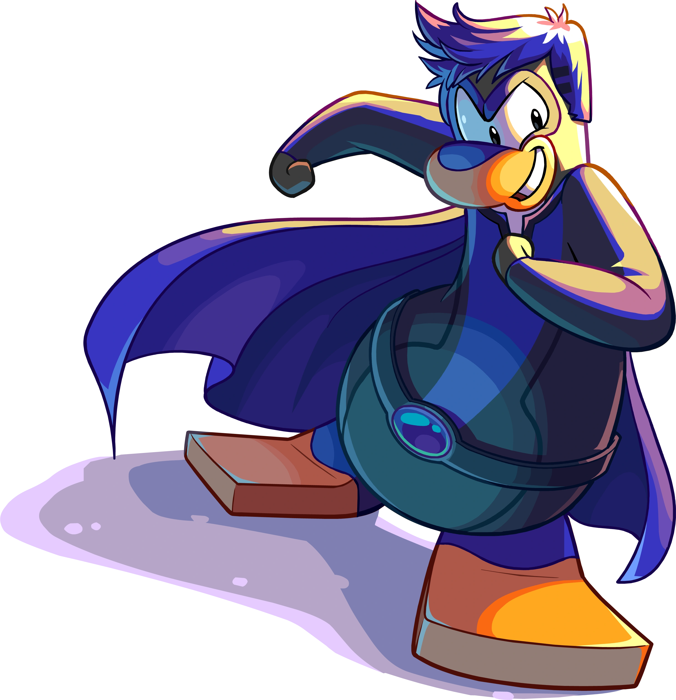

Pinguinando
Personagens

Shadow Guy
Após ser eletrocutado pela torradeira 3000 (Uma invenção de Gary), Sam conquistou seus poderes de ondas de sombra. Gary o ajudou a aprender a usar seus poderes até o dia em que ele os usou para derrotar uma massa mutante de pizza, quando ele foi chamado de “Cara das Sombras” no jornal, daí surgiu o apelido Shadow Guy. Mais tarde, ele encontrou Gamma Gal ao tentar derrotar um monstro marinho.